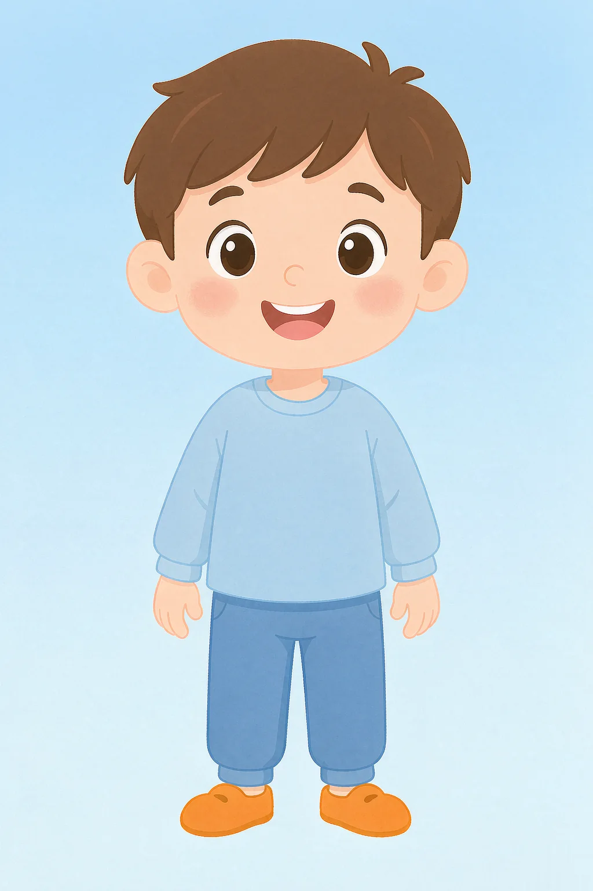

🎮 游戏一 · 身体小探险
点一点发光的小圆点
点一点发光的小圆点
看看身体里藏着什么秘密！
用手点、用鼠标点都可以，还可以让小熊自动讲解哦。

🫀 他们就是住在你身体里的"器官朋友"——先认识一下，再去下面找找他们藏在哪里！

👆
点一点左边的小圆点吧！
六个发光的小圆点，藏着六个器官朋友。点开一个，小熊医生详细讲给你听！
💡 悄悄告诉你：在医院里，医生会用平板电脑让身体的样子像动画片一样"浮"在眼前哦！